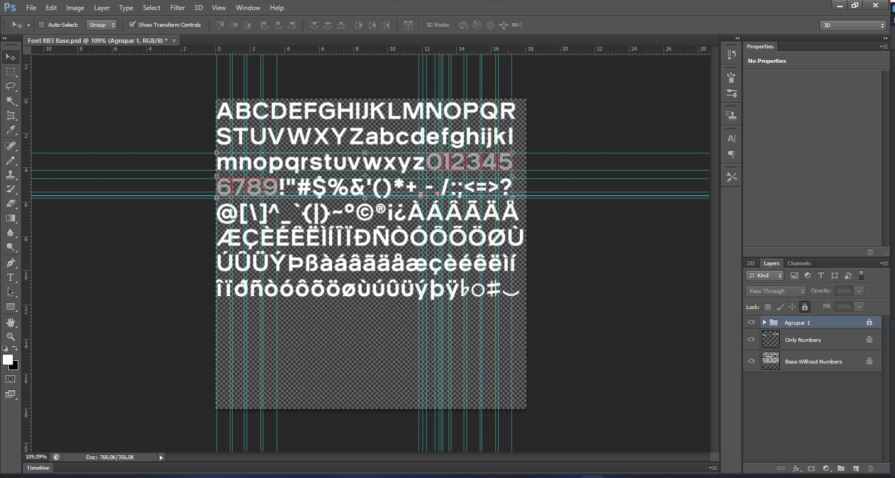
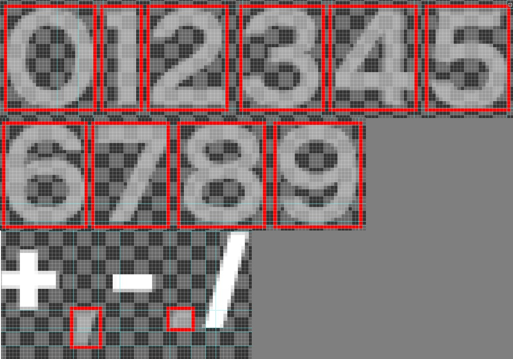
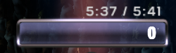
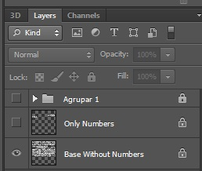

Here you will find everything you need to create your own custom score fonts for Rock Band 3 Deluxe.
What you will need:
- .psd base (Download here)
- Adobe Photoshop CS6 or higher (Or another image editor that is capable of opening .psd)
The .psd was created in version CS6, so I don't guarantee it will work in previous versions.
- The font you will use, installed.
Starting editing:
We have everything, let's get started.
When you open the psd, you will see this here.

The numbers, comma and period with low opacity and red squares.
Zoom in on the numbers as you edit.
Each number must be typed in its own text box. Typing them all on the same layer makes spacing difficult.
And don't forget the comma and the period. (If you want)
The custom font must be INSIDE the red square.

Anything else will appear in the next or previous number.
Like here: 
Saving the image:
- Hide the layers: "Agrupar 1" and "Only Numbers"

- File > Save as > png.
The size is already correct for conversion with the bot (in #milo-bot-spam ) or superfreq. (512x512)
Tutorial to convert and how to use in-game: Rock Band 3 Deluxe Custom Textures Tutorial (Thanks Lino)